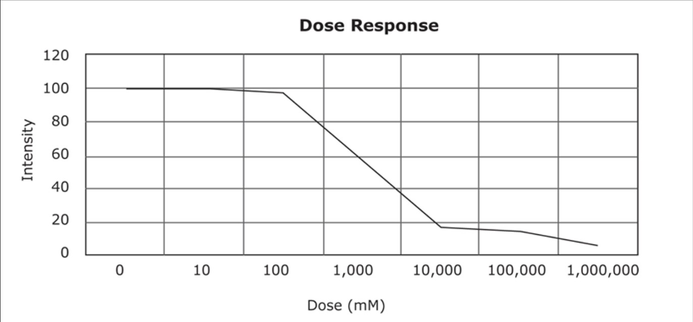
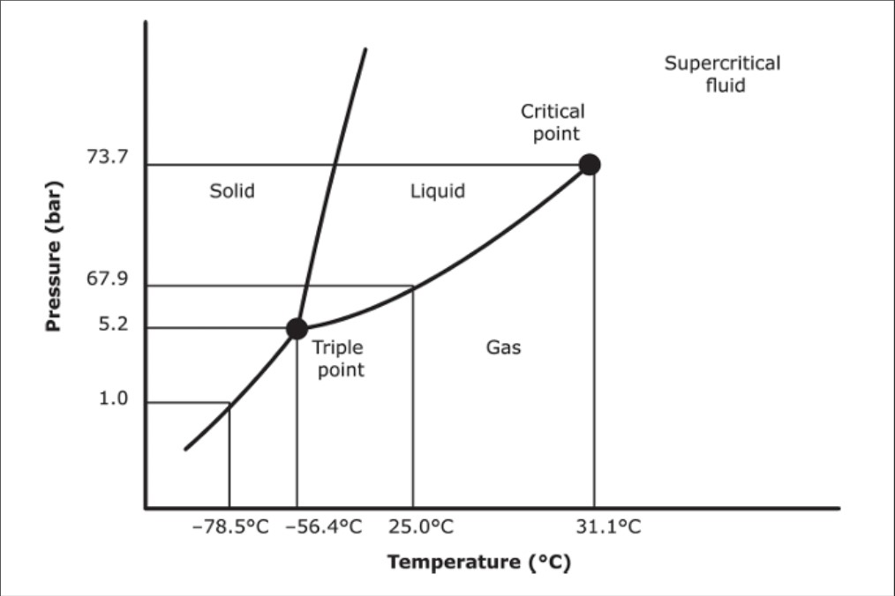
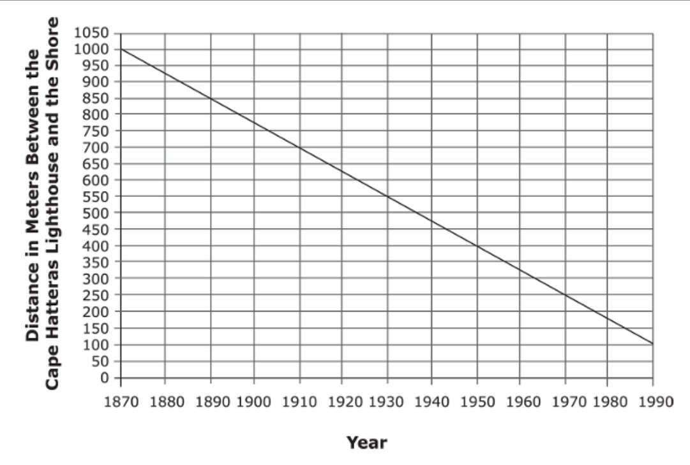
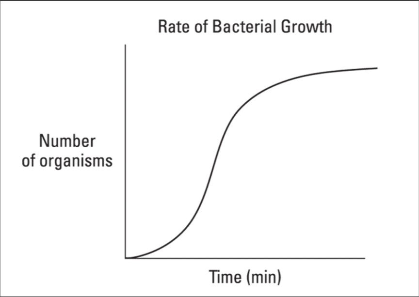
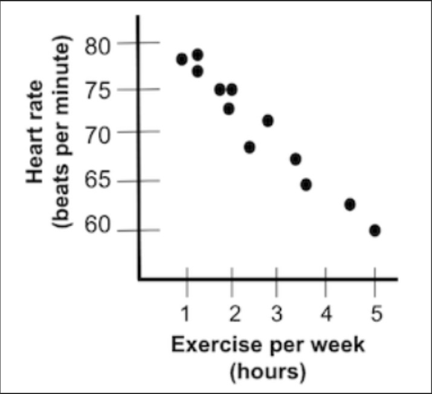

Question 1
Tuberculosis is caused by the mycobacterium, Mycobacterium tuberculosis, which kills approximately half of all infected patients. For many years, M. tuberculosis was susceptible to drug therapy; however, like many other disease-causing organisms, new drug resistant strains of tuberculosis have emerged. Many theories have been postulated to explain the emergence of these resistant strains (also known as “superbugs”) but most health-care professionals blame the over prescription of antibiotics as well as their misuse by patients. Today, before a tuberculosis patient can be treated, it is first necessary to find out which strain of bacterium is causing the disease and then to find a drug that will kill that particular strain. Fortunately, a new technique has been discovered that aids this process. Scientists can now insert luciferase, the enzyme that makes fireflies glow in the dark, into tuberculosis cells taken from the patient, which makes the tuberculosis cells glow in the dark.
The following chart depicts the dose response curve of M. tuberculosis to an antibiotic drug.
Question 2
All matter exists in one of three phases: as a solid, liquid, or gas. Solids are rigid in shape and usually the densest form of matter. Both liquids and gases are generally less dense and able to deform to take on the shape of a container, with gas molecules being the least constrained. The most notable exception to the density rule is water. Liquid water is actually denser than solid water (ice). You know that this is true because you have probably noticed that lakes and waterways freeze from the top down as opposed to the bottom up. For the same reason, ice cubes float in a glass of water. Pressure and temperature affect the phase that matter is found in. For example, at high pressure and low temperature, matter is more likely to be solid. Conversely, at low pressure and high temperature, matter is often found in gaseous state. By changing pressure and temperature, researchers can change the phase of a substance. The following diagram depicts the phase that carbon dioxide will be found in based on the temperature and pressure.
The dark black lines represent phase equilibria where there is more than one phase present at a given temperature and pressure.
Question 3
The Cape Hatteras lighthouse is located on the Outer Banks, a chain of islands off the coast of North Carolina, and was built in 1870. After the lighthouse was built, citizens of the Outer Banks noted that the ocean was eroding the beach, bringing the shoreline progressively closer to the lighthouse. The chart below shows how the distance in meters between the shoreline and the lighthouse changed between 1870 and 1990.
In 1990, scientists studied the Cape Hatteras lighthouse to determine when local residents would need to move the lighthouse before it suffered damage.
Question 4
Jamel cultures some bacteria on a petri dish to study the rate of its growth. He observes the bacteria under a microscope at regular intervals and records the results in the following graph.
Question 5
A biology student wanted to determine if there is a relationship between resting heart rate and time spent exercising per week. He gathered information from 12 classmates and constructed the graph below.
1. If a scientist knows that an intensity score of 20 or less is considered acceptable (the remaining bacteria can be eradicated by the host’s immune response), choose the dose of antibiotic that the scientist should recommend for patients.
2. Using the given figure, determine what phase change would occur if carbon dioxide at -70°C and 70 bar was heated to 25°C and held at the same pressure.
3. According to the information above, scientists could project that in the year 2000 the distance between the shore and the lighthouse would most likely be closest to:
4. The bacteria population
5. What is likely to be a resting heart rate for a student who exercises about 3 hours a week?